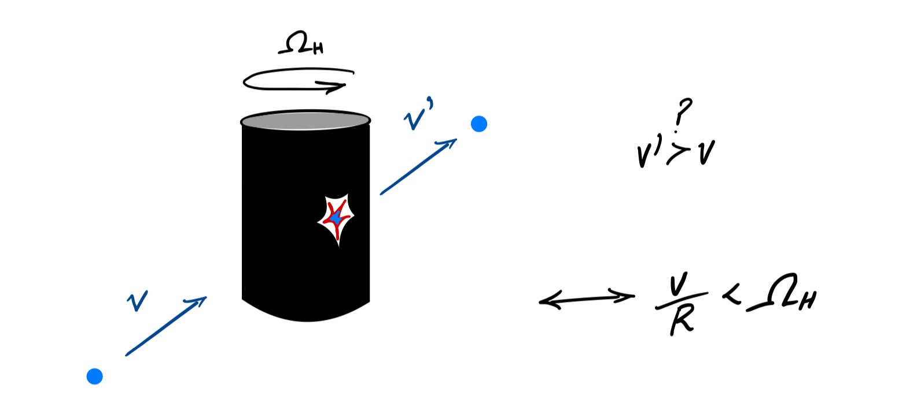
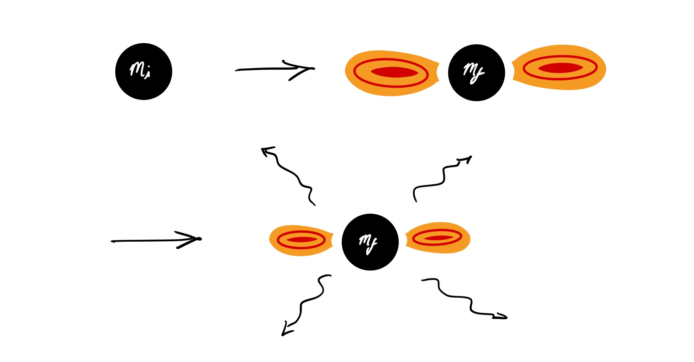
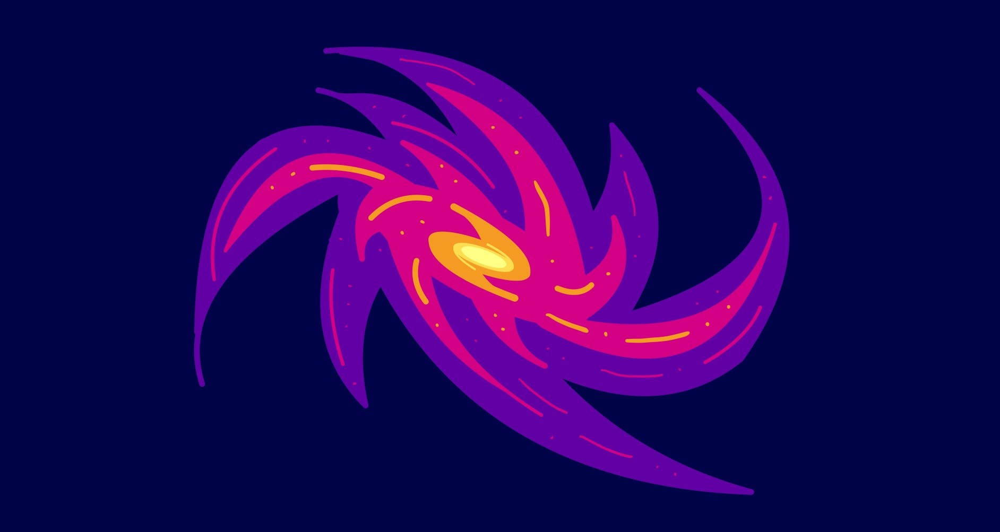

Black Hole Superradiance
Imagine a particle scatters tangentially from the surface of a spinning cylinder. That particle might gain or lose energy (or velocity) from this encounter. Whether or not the particle gains energy is dependent on a relation between the cylinder's angular velocity and the velocity of the particle.
Now replace the cylinder with a spinning black hole, and the scattering particle with a boson. An analagous condition to that in the cylinder case determines whether the scattering boson field can extract energy from the black hole.
Provided that an initial boson field perturbation satisfies the superradiance condition, is will grow and form a coherent oscillating cloud. If the bosonic field is spin-0 or spin-1 then the maximum mass that can be extracted from a black hole in this way is approximately 10% of the original black hole's mass. As the boson field extracts energy and angular momentum from the black hole, it eventually reduces the black hole's angular momentum sufficiently that the superradiance condition will no longer be satisfied. After this point the cloud will dissipate slowly.
Very light bosons are hypothetical particles beyond the Standard Model of particle physics. They are dark matter candidates, and are motivated by some string theory models, as well as the strong charge parity problem in particle physics.
Using the phenomenon of black hole superradiance, the existence of these ultralight bosons can tested. These tests are carried out by observations of black holes as well as searches for the gravitational wave or other emmission from dissipating boson clouds.